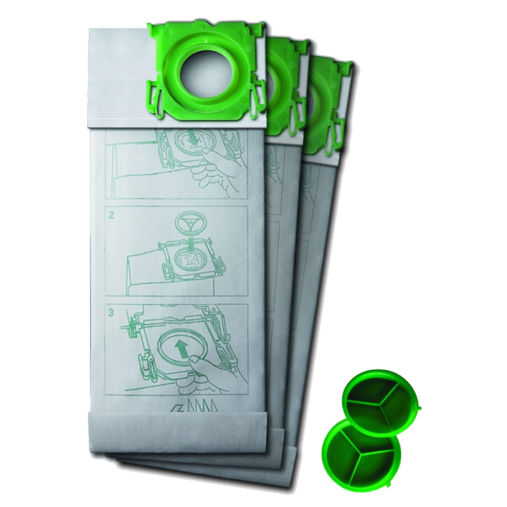

Bork V7D1 Мешки-пылесборники для пылесосов
Сменные мешки-пылесборники Bork V7D1 выполнены из синтетического материала, что гарантирует высокую степень фильтрации. В комплекте 8 синтетических мешков, которые способны задерживать в себе до 99% всасываемой пыли.
Основные характеристики
Материал пылесборников: нетканый
Антиаллергенная обработка: да
Количество пылесборников в комплект: 8шт.
Цвет: белый
Срок эксплуатации комплекта: 1 год
Модель товара: V7D1
Гарантия: 1 год
Страна-производитель: Германия
Комплект состоит из 8 пылесборников со сроком службы 1,5 месяца каждый и подходит для пылесосов V700, V701, V702, V703,V705, V7011, V7012 и V7013. Модели ULTRA Bag являются дополнительным фильтром и при удалении из пылесоса герметично закрываются специальной крышкой. Такой пылесборник специально разработан для удобства людей, страдающих от аллергии и предъявляющих повышенные требования к гигиене.